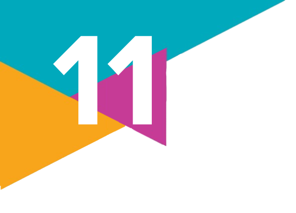
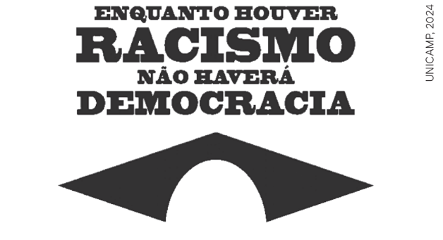

Cidadania e direitos
1.
Qual foi o contexto de origem da cidadania com os princípios que conhecemos hoje? Quais foram os primeiros direitos conquistados nesse contexto?
2.
Defina e diferencie os direitos civis, políticos e sociais e, em seguida, indique se eles são direitos de primeira, segunda ou terceira geração.
3.
Reúnam-se em grupos para pesquisar aqueles que são intitulados direitos de terceira, quarta e quinta gerações, refletindo sobre o contexto brasileiro. Algumas possibilidades de pesquisa são:
(1) Identificar as medidas políticas tomadas por governos em relação à defesa do meio ambiente, como a preservação da Amazônia;
(2) Identificar as medidas políticas tomadas por governos em relação à defesa dos povos indígenas e das comunidades quilombolas;
(3) Identificar as medidas políticas tomadas por governos em defesa da democracia brasileira.
Ao final da pesquisa, responda: A política pesquisada pode ser caracterizada como inclusiva, por garantir a extensão dos direitos à maioria ou a uma minoria que é discriminada, ou como restritiva, por corresponder a interesses das elites políticas ou do modelo econômico vigente?
(1) Identificar as medidas políticas tomadas por governos em relação à defesa do meio ambiente, como a preservação da Amazônia;
(2) Identificar as medidas políticas tomadas por governos em relação à defesa dos povos indígenas e das comunidades quilombolas;
(3) Identificar as medidas políticas tomadas por governos em defesa da democracia brasileira.
Ao final da pesquisa, responda: A política pesquisada pode ser caracterizada como inclusiva, por garantir a extensão dos direitos à maioria ou a uma minoria que é discriminada, ou como restritiva, por corresponder a interesses das elites políticas ou do modelo econômico vigente?
4.
(Unicamp-SP – 2024)
Texto 1:
De acordo com os textos 1 e 2, é possível dizer que, no caso brasileiro, os conceitos de democracia e de cidadania:
a) são limitados pela persistência histórica do racismo, pois os movimentos sociais pouco se ocupam dessa temática, reduzindo a possibilidade da conquista de igualdade.
b) podem ser tomados como conceitos relacionados, relativos à esfera do indivíduo, e marcados por processos lineares de conquistas de direitos sociais.
c) podem ser tomados como conceitos relacionados, próprios da esfera coletiva, e marcados por processos não lineares de conquistas e perdas de direitos sociais.
d) são marcados por disputas sociais e históricas, e influenciam, de modo secundário, o exercício da igualdade, especialmente para grupos como mulheres, negros e indígenas.
Texto 1:

Texto 2: O sociólogo Octavio Ianni afirmou que democracia e cidadania são processos políticos marcados por dificuldades e retrocessos, pois a participação social – especialmente a de grupos como mulheres, negros, indígenas – é uma luta penosa e que, no Brasil, vem sendo realizada precariamente ao longo da história.Manifesto de lançamento da “Coalizão Negra Por Direitos”, reunião de entidades e coletivos do movimento negro brasileiro, 2020.
Adaptado de: “Entrevista com Octavio Ianni: Comunicação e Globalização”. Revista Novos Olhares, n. 4, p. 25, 1999.
De acordo com os textos 1 e 2, é possível dizer que, no caso brasileiro, os conceitos de democracia e de cidadania:
a) são limitados pela persistência histórica do racismo, pois os movimentos sociais pouco se ocupam dessa temática, reduzindo a possibilidade da conquista de igualdade.
b) podem ser tomados como conceitos relacionados, relativos à esfera do indivíduo, e marcados por processos lineares de conquistas de direitos sociais.
c) podem ser tomados como conceitos relacionados, próprios da esfera coletiva, e marcados por processos não lineares de conquistas e perdas de direitos sociais.
d) são marcados por disputas sociais e históricas, e influenciam, de modo secundário, o exercício da igualdade, especialmente para grupos como mulheres, negros e indígenas.
5.
Leia o texto e responda às questões.
A cronologia e a lógica da sequência descrita por Marshall foram invertidas no Brasil. Aqui, primeiro vieram os direitos sociais, implantados em período de supressão dos direitos políticos e de redução dos direitos civis por um ditador que se tornou popular. Depois vieram os direitos políticos, de maneira também bizarra. A maior expansão do direito do voto deu-se em outro período ditatorial, em que os órgãos de representação política foram transformados em peça decorativa do regime. Finalmente, ainda hoje muitos direitos civis, a base da sequência de Marshall, continuam inacessíveis à maioria da população.
Na sequência inglesa, havia uma lógica que reforçava a convicção democrática.
[...] Mas é razoável supor que caminhos diferentes afetem o produto final, afetem o tipo de cidadão, e, portanto, de democracia, que se gera.
Uma consequência importante é a excessiva valorização do Poder Executivo.
O historiador José Murilo de Carvalho aponta a existência de uma inversão na ordem da conquista de direitos no Brasil e uma das consequências desse processo para a cidadania e a democracia no país.
a) Que consequência é essa? Dê exemplos de como ela pode ser observada em nossa realidade.
b) Que medidas você acredita que poderiam ser implementadas para reforçar a cidadania e os princípios democráticos no Brasil?
A cronologia e a lógica da sequência descrita por Marshall foram invertidas no Brasil. Aqui, primeiro vieram os direitos sociais, implantados em período de supressão dos direitos políticos e de redução dos direitos civis por um ditador que se tornou popular. Depois vieram os direitos políticos, de maneira também bizarra. A maior expansão do direito do voto deu-se em outro período ditatorial, em que os órgãos de representação política foram transformados em peça decorativa do regime. Finalmente, ainda hoje muitos direitos civis, a base da sequência de Marshall, continuam inacessíveis à maioria da população.
Na sequência inglesa, havia uma lógica que reforçava a convicção democrática.
[...] Mas é razoável supor que caminhos diferentes afetem o produto final, afetem o tipo de cidadão, e, portanto, de democracia, que se gera.
Uma consequência importante é a excessiva valorização do Poder Executivo.
CARVALHO, J. M. de. Cidadania no Brasil. O longo Caminho. 3. ed. Rio de Janeiro: Civilização Brasileira, 2002, p. 219-221.
O historiador José Murilo de Carvalho aponta a existência de uma inversão na ordem da conquista de direitos no Brasil e uma das consequências desse processo para a cidadania e a democracia no país.
a) Que consequência é essa? Dê exemplos de como ela pode ser observada em nossa realidade.
b) Que medidas você acredita que poderiam ser implementadas para reforçar a cidadania e os princípios democráticos no Brasil?
6.
Cite alguns avanços e retrocessos nos direitos civis, políticos e sociais no Brasil, nas últimas décadas. Como eles impactaram sua realidade ou a realidade das pessoas próximas a você? Se possível, converse com familiares ou vizinhos a respeito desse tema.